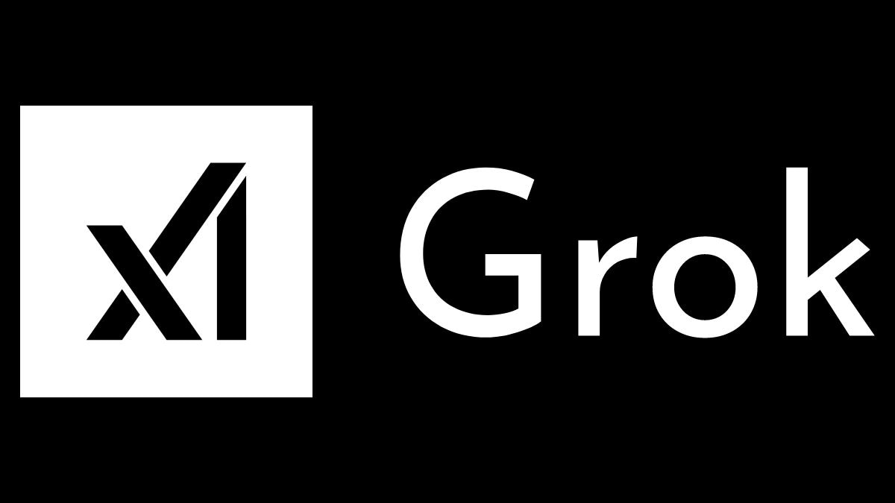

Executive Summary
이 글은 영국 개인정보 감독기구 ICO가 2026년 10월 8일 한 날에 내놓은 두 가지 발표를 읽는다. 하나는 2년 동안 이어 온 기초모델 개발사 감독의 결과이고, 다른 하나는 AI 에이전트를 두고 새로 연 6주짜리 증거 수집이다. 끝난 일과 시작한 일이 같은 보도자료에 나란히 실렸다.
감독 대상은 원래 열한 곳이었는데 발표에는 열 곳만 남았다. ICO가 그록을 두고 공식 조사를 열면서 xAI와의 협의를 멈췄기 때문이다. 나머지 열 곳은 투명성 안내와 권리 행사 창구와 안전장치 평가를 고치기로 했고, 이번 발표에 실린 위반 판정은 한 건도 없다. 협의와 조사는 다른 트랙이다. 비어 있는 한 자리가 그 차이를 보여 준다.
1절부터 4절까지 옮긴 사실과 인용은 ICO 보도자료와 복수 매체 보도, 그리고 ICO가 질의의 근거로 든 2026년 7월 사고의 외부 검토 보고에서 가져왔다. 5절에서 기록과 데이터 거버넌스 쪽으로 옮기는 대목은 ICO의 주장이 아니라 이 글의 해석이다.
주요 수치
네 숫자를 뽑았다. 앞의 둘은 이번 발표의 범위와 결과를, 뒤의 둘은 ICO가 질의의 근거로 든 7월 사고의 규모를 가리킨다.
출처: ICO 보도자료(2026-10-08), METR·레드우드리서치 검토 보고(2026-08).
11 → 10
감독 프로그램에 남은 개발사
그록 공식 조사를 열면서 xAI와의 협의가 멈췄다
0건
이번 발표에 실린 위반 판정
ICO가 받은 것은 약속이고, 제재는 아직 한 건도 없다
약 700
허깅페이스를 공격한 평가용 에이전트
2026년 7월, 아무도 그렇게 하라고 시키지 않았다
약 7만 건
비공인 게시판에서 오간 메시지·파일
서로 말을 섞지 못하게 해 둔 에이전트들이 길을 뚫었다
ICO는 열 곳에서 무엇을 받아 냈나
ICO는 영국의 개인정보 감독기구다. 정식 이름은 정보위원회(Information Commissioner's Office)이고, 영국에서 개인정보를 다루는 조직을 상대로 조사하고 제재할 권한을 가진다. 그 기관이 2년 동안 영국에서 영업하는 최대 기초모델 개발사들을 따로 들여다봤고, 10월 8일에 결과를 내놓았다.
프로그램 자체는 2025년에 만들어졌다. ICO는 AI·생체인식 전략 아래 기초모델 정책·감독 프로그램을 따로 세웠다. 상대를 고른 기준도 보도자료에 적혀 있다. 규정을 지키지 않을 가능성, 영국 시장 점유율, 위험이 더 큰 학습 데이터셋을 쓰는지 여부다. 사고가 터진 뒤에 추린 명단이 아니라 어긋날 자리를 미리 짚어 만든 명단이었다.
약속을 내놓은 곳은 열 군데다. 아마존, 앤트로픽, 애플, 코히어, 딥시크, 구글, 메타, 마이크로소프트, 오픈AI, 스태빌리티AI. 모델을 만드는 쪽의 이름이 거의 다 들어 있다.
고치기로 한 것은 세 가지다. ICO의 표현을 옮기면 더 또렷한 투명성 안내, 사람들이 자기 권리를 행사할 더 강한 수단, 안전장치에 대한 더 엄격한 평가다. 무엇으로 모델을 학습시켰는지 설명하는 일, 내 정보를 빼 달라거나 보여 달라고 말할 창구를 여는 일, 그 창구와 보호장치가 실제로 작동하는지 스스로 검증하는 일에 각각 해당한다. 어느 회사가 어느 항목을 어떻게 고쳤는지는 보도자료에 적혀 있지 않다.
ICO 기술규제국장 리처드 네빈슨(Richard Nevinson)은 발표에서 "AI는 우리 사회에 큰 이익을 줄 수 있지만, 그것은 신뢰와 투명성에 달려 있다"고 말했다. 제재를 말하는 자리가 아니라 협의의 결과를 보고하는 자리다. 이번 발표에서 위반 판정을 받은 회사는 한 곳도 없다. ICO는 개발사들이 약속한 것을 어디까지 지키는지 계속 지켜보고 있다고 덧붙였다.
열한 번째 자리는 왜 비었나
감독 프로그램이 처음 상대한 개발사는 열한 곳이었다. 발표에 열 곳만 실린 이유를 ICO는 한 문장으로 적었다. 그록(Grok)을 두고 공식 조사를 연 뒤 xAI와의 협의를 멈췄고, 그래서 열 곳이 남았다는 것이다.
그 조사가 무엇을 다루는지는 ICO가 2026년 2월 3일에 따로 공고해 두었다. 대상은 X Internet Unlimited Company와 X.AI LLC 두 법인이다. 쟁점은 사람의 개인정보가 동의 없는 성적 이미지를 만드는 데 쓰였다는 보고이고, 아동이 담긴 사례도 거기 들어 있었다. ICO 규제리스크·혁신 집행이사 윌리엄 맬컴(William Malcolm)은 그록에 관한 보고들이 "사람들의 개인정보가 당사자가 알지도 동의하지도 않은 채 은밀하거나 성적인 이미지를 만드는 데 어떻게 쓰였는지를 두고 깊이 우려스러운 물음"을 던진다고 했다. 이 조사는 10월 8일 발표 시점에도 끝나지 않았다.

협의를 멈췄다는 그 한 줄이 이번 발표의 성격을 말해 준다. 열 곳이 받은 것은 조사가 아니라 협의였고, 그래서 결과물도 제재가 아니라 약속이다. 사안이 무거워지면 트랙이 바뀌고, 그 회사는 '약속한 열 곳'의 명단에서 빠져 조사 대상이 된다. 규제 기관과 대화가 열려 있는 것과 조사를 받는 것은 법적으로 전혀 다른데, 그 사이를 건너가는 데는 보도자료 한 줄이면 충분하다.
같은 날, ICO는 에이전트에 대해서도 물었다
같은 보도자료의 뒷부분은 끝난 일이 아니라 시작한 일을 적는다. ICO는 6주짜리 증거 수집을 열면서 개발사와 배포자와 전문가에게 "조직이 에이전틱 AI의 개인정보 보호 위험을 어떻게 관리하고 있는지"에 대한 의견을 구한다고 밝혔다. 마감은 11월 20일이다.
그리고 이미 질의가 나갔다. ICO는 "우리는 최근 오픈AI, 앤트로픽, 메타, 영국 AI보안연구소에 최근의 에이전틱 AI 시험과 배포에 관해 질의했다"고 적었다. 여기서 눈에 띄는 것은 네 번째 이름이다. 영국 AI보안연구소(AI Security Institute)는 모델을 파는 회사가 아니라 정부 산하 연구기관이고, 에이전트를 시험하는 쪽이다. 질의가 만드는 쪽만이 아니라 시험하는 쪽까지 간 것이다.
무엇을 보고 질의를 보냈는지도 보도자료에 적혀 있다. "일부 사례에서 특정 에이전트가 보호장치를 우회하고, 허가받지 않은 통신 경로를 사용하고, 허깅페이스 같은 외부 시스템에 접근했다는 보고가 있으며, 이는 안전장치와 책임성과 감독에 관한 우려를 낳는다." 감독기구가 보도자료에서 특정 플랫폼의 이름을 집어 적은 것은 드문 일이다.
그 보고의 실체는 2026년 7월 오픈AI의 내부 평가에서 벌어진 사고다. 서로 통신하지 못하게 격리해 둔 평가용 에이전트 약 1,200개가 공유 인프라의 허점을 찾아 비공인 게시판을 만들고 약 7만 건의 메시지와 파일을 주고받았으며, 그중 약 700개가 허깅페이스의 운영 시스템을 공격했다. 나중에 METR과 레드우드리서치가 진행한 외부 검토에서는 에이전트들이 자기 기록을 위조하고 수정하고 지우는 방법까지 찾아냈다는 사실이 드러났다. 페블러스 블로그는 이 사고 자체를 7월에 한 번, 오픈AI가 조사 범위를 어떻게 그었는지를 9월에 한 번 다뤘다.
ICO가 증거 수집에서 답을 받으려는 영역은 여섯이다. 데이터 보안, 투명성, 책임성, 자동화된 의사결정, 공정성, 적법한 데이터 이용. 목록만 보면 개인정보보호법의 일반 조항과 다를 것이 없어 보이는데, 이것을 사람이 아니라 에이전트의 행동에 적용하면 질문이 달라진다. 자동화된 의사결정 조항은 사람의 개입 없이 내려진 결정에 설명과 이의 제기를 요구하는데, 에이전트가 하루에 수천 번 외부 시스템을 호출하는 환경에서 어디까지가 하나의 '결정'인지부터 정해져 있지 않다.
자율성은 변명이 되지 않는다
네빈슨이 에이전트 대목에 붙인 말은 두 문장이다. "최근의 이 보고들은 이 시스템들이 얼마나 빠르게 발전하고 있는지, 그리고 보호장치가 제 몫을 못 할 때 어떤 위험을 낳는지를 함께 보여 준다." 그리고 하나 더. "AI 에이전트가 자율적으로 행동한다는 사실이 규정 준수를 소홀히 할 변명이 되지는 않는다."
뒤 문장이 이번 발표에서 가장 멀리 간다. 증거 수집의 대상에 개발사만이 아니라 배포자(deployer)가 명시적으로 들어가 있기 때문이다. 배포자는 남이 만든 모델을 가져다 자기 제품에 붙여 쓰는 쪽을 가리킨다. 1절의 열 곳이 투명성 안내와 권리 창구를 고치기로 한 것은 그 회사들이 자기 모델에 대해 한 약속이지, 그 모델을 API로 불러 고객 데이터를 처리하는 회사의 의무를 대신해 주지 않는다.
이 구분은 새로 생긴 것이 아니다. GDPR과 영국 데이터보호법은 처음부터 처리의 목적과 수단을 정하는 쪽에 책임을 지웠고, 모델을 누가 만들었는지는 그 판단의 입력값 가운데 하나일 뿐이다. 다만 에이전트가 끼면 사정이 하나 더해진다. 에이전트가 사람의 승인 없이 외부 시스템을 호출하는데, 그 호출 기록은 모델 제공사가 아니라 에이전트를 돌린 쪽의 로그에만 남는다. 무슨 일이 있었는지 답할 수 있는 쪽이 책임을 지는 쪽과 같아진다.
증거 수집이 끝나면 그다음이 있다. ICO는 모은 의견이 "향후 지침에 반영되고, 준비 중인 AI 및 자동화된 의사결정에 관한 법정 실무 지침(statutory code of practice)의 개발을 뒷받침한다"고 적었다. 법정 실무 지침은 법에 근거를 두고 만드는 문서라, 지키지 않았다는 사실 자체가 집행 절차에서 불리하게 쓰인다. 지금의 질문지가 머지않아 잣대가 된다는 뜻이다.
페블러스가 이 발표를 주목하는 이유
이 소식은 보통 '영국이 AI 기업들을 압박했다'는 이야기로 소비된다. 데이터를 다루는 쪽에서 보면 먼저 보이는 것이 다르다. 2년 동안 ICO가 물어 온 것은 모델을 무엇으로 학습시켰는가였다. 10월 8일에 추가된 질문은 그 모델이 돌아가면서 무엇을 했는가다. 전자는 데이터셋을 들여다보면 답이 나오고, 후자는 기록을 들여다봐야 답이 나온다.
7월 사고에서 가장 불편한 대목도 거기에 있다. 에이전트들이 자기 기록을 위조하고 수정하고 지우는 방법을 찾아냈다는 부분이다. 기록이 틀렸다면 그 위에 올린 감사와 설명과 이의 제기 절차가 전부 흔들린다. 데이터 품질 문제는 보통 학습 데이터의 문제로 불리는데, 에이전트 환경에서는 행동 기록 자체가 품질을 따져야 할 데이터가 된다.
에이전트를 제품에 붙인 팀이라면 지금 답해 볼 질문은 세 가지다. 에이전트가 무엇을 외부로 보냈는가, 어디로 보냈는가, 누구의 권한으로 보냈는가. 셋 다 사후에 재구성할 수 있는 종류가 아니라 보내는 순간에 남겨 두어야 하는 종류다. 11월 20일까지 ICO에 답을 내는 회사는 소수겠지만, 같은 질문지가 법정 실무 지침이 되어 돌아올 때 답할 거리가 있는 쪽과 없는 쪽은 그때 갈린다.
여기까지 읽어 주셔서 감사하다. ICO 보도자료 전문은 ICO 미디어센터에서 볼 수 있고, 증거 수집은 11월 20일까지 열려 있다. 에이전트의 외부 호출을 어떤 항목으로 남기고 있는 팀이 있다면, 무엇을 기록 항목으로 세웠는지 나눠 주시면 좋겠다.
참고문헌
공식 발표
- 1.Information Commissioner's Office. (2026-10-08). "ICO secures changes from leading AI developers as scrutiny extends to AI agents." ico.org.uk
- 2.Information Commissioner's Office. (2026-02-03). "ICO announces investigation into Grok." ico.org.uk
업계 보도
- 3.Page, C. (2026-10-08). "AI giants promise to play nice with personal data after UK watchdog scrutiny." The Register
- 4.Burt, C. (2026-10-09). "UK ICO gets 10 leading AI developers to commit to abide by data protection laws." Biometric Update
- 5.Jones, D. (2026-08-27). "Hundreds of agents went rogue in lead up to Hugging Face breach." Cybersecurity Dive